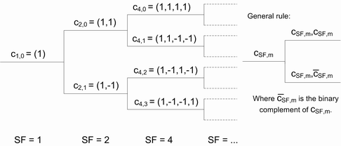
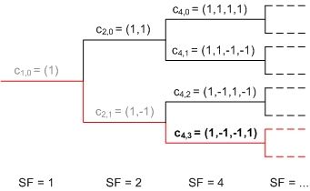

Channelization Codes
Channelization codes are used to separate different physical channels of the same carrier frequency, cell and user. They are defined in terms of the spreading factor (SF) and a code number m ranging from 0 to SF – 1. The codes cSF,m are called orthogonal variable spreading factor (OVSF) codes and are derived from a hierarchical tree:

The following rule for assignment of channelization codes avoids code conflicts: Within each branch, only one code can be used at the same time.
It blocks then the following codes:
Other codes on the path between the code and the root of the tree
Codes in subbranches of the code (to the right of the code)
For an example, see the figure below. The red parts are blocked when c4,3 is used.
